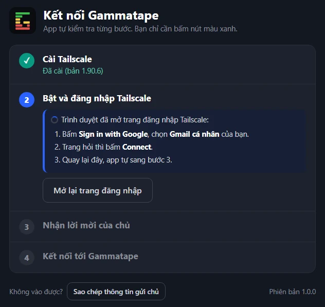
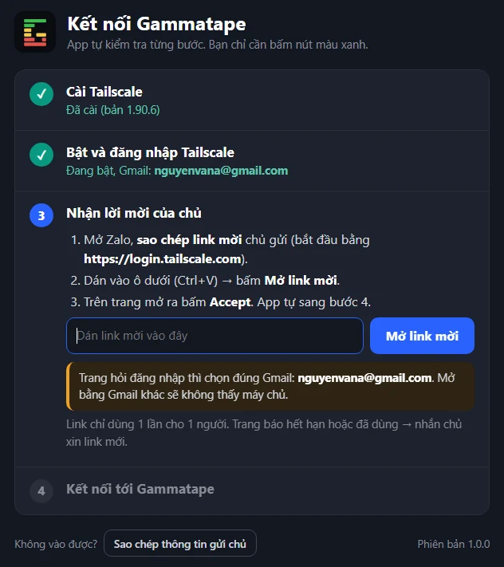
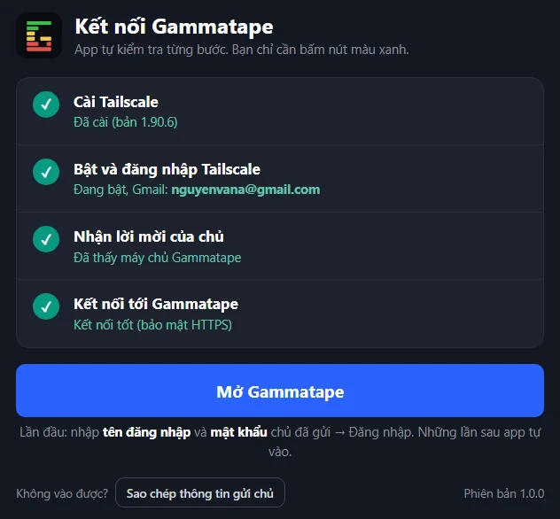

Vào Wyckdelta trong 3 bước
Khoảng 5 phút, chỉ làm một lần. Chọn thiết bị bạn đang dùng, trang sẽ chỉ hiện đúng các bước cho thiết bị đó.
Bạn đang dùng:
1Cài app Tailscale
2Bấm link mời
3Mở Wyckdelta và đăng nhập
1Mở app Wyckdelta
2Bấm nút xanh trong app
3Đăng nhập Wyckdelta
Trước khi bắt đầu, bạn cần có (Wyckdelta gửi qua tin nhắn khi bạn inbox xin dùng thử):
- File Wyckdelta.zip (chứa app cho Windows)
- 1 link mời Tailscale (dùng ở Bước 2)
- Địa chỉ Wyckdelta (dùng ở Bước 3)
- Tên đăng nhập + mật khẩu (dùng ở Bước 3)
- Một Gmail cá nhân để đăng nhập Tailscale (không dùng email công ty)
1BƯỚC 1Cài app Tailscale
Mở Tailscale trên App Store Mở Tailscale trên Google Play Tải Tailscaletailscale.com/download- Bấm Nhận để cài, rồi mở app Tailscale.
- Bấm Get Started.
- Máy hỏi “Tailscale muốn thêm cấu hình VPN” → bấm Cho phép, nhập mật mã mở máy.
- Bấm Log in → Sign in with Google → chọn Gmail cá nhân của bạn.
- Bấm Cài đặt, rồi mở app Tailscale.
- Bấm Get Started.
- Máy hỏi “Yêu cầu kết nối” (VPN) → bấm OK.
- Bấm Sign in with Google → chọn Gmail cá nhân của bạn.
- Mac: tải bản cho macOS rồi mở file, làm theo màn hình (máy hỏi cho phép cấu hình VPN thì bấm Cho phép).
Máy Windows không cài được app Wyckdelta (máy công ty): bấm Download bản Windows, mở file vừa tải, bấm Install. - Tìm biểu tượng Tailscale: Mac ở thanh menu trên cùng; Windows ở góc phải dưới, cạnh đồng hồ (không thấy thì bấm mũi tên ^).
- Bấm vào biểu tượng (Windows: chuột phải) → Log in.
- Trình duyệt mở ra → Sign in with Google → chọn Gmail cá nhân → Connect.
“Tailscale” muốn thêm cấu hình VPN
Yêu cầu kết nối
Tailscale muốn thiết lập kết nối VPN
KhôngHuỷCho phépOK
Máy hỏi thì bấm nút khoanh đỏ
Tailscale
● Connected
máy của bạn
Kết quả: công tắc xanh
^⋮⋮🔊9:41
Bấm vào biểu tượng Tailscale → Log in
✔ Xong Bước 1 khi: app Tailscale có công tắc màu xanh và chữ Connected.bấm vào biểu tượng Tailscale thấy chữ Connected.
Nhớ Gmail bạn vừa chọn. Bước 2 phải dùng đúng Gmail đó.
2BƯỚC 2Bấm link mời
- Mở tin nhắn, bấm vào link mời Wyckdelta đã gửi.
Link bắt đầu bằng login.tailscale.com - Nếu trang hỏi đăng nhập: bấm Sign in with Google, chọn đúng Gmail ở Bước 1.
- Bấm nút Accept (nghĩa là “Đồng ý”).
🔒 login.tailscale.com
Bạn được mời dùng máy
máy chủ Wyckdelta
Accept
Decline
Bấm Accept
Tailscale
máy của bạn
máy chủ Wyckdelta
Kết quả: có thêm dòng máy chủ
✔ Xong Bước 2 khi: mở lại Tailscale, thấy thêm dòng máy chủ Wyckdelta có chấm xanh (tên máy ghi trong tin nhắn kèm link mời).
Link mời chỉ dùng được 1 lần, cho 1 người. Trang báo link hết hạn hoặc đã dùng → nhắn Wyckdelta xin link mới.
3BƯỚC 3Mở Wyckdelta và đăng nhập
- Kiểm tra Tailscale đang bật (công tắc xanh / Connected).
- Bấm vào địa chỉ Wyckdelta trong tin nhắn (mở bằng Safari) (mở bằng Chrome) (mở bằng Chrome, Edge hoặc Safari).
Địa chỉ này chỉ mở được khi Tailscale đang bật. - Nhập tên đăng nhập và mật khẩu → bấm Đăng nhập.
Gõ chữ thường, không có dấu cách.
🔒 địa chỉ Wyckdelta
Wyckdelta · Đăng nhập
tên của bạn
••••••••
Đăng nhập
Trang đăng nhập Wyckdelta
✔ Xong! Bạn thấy biểu đồ là đã vào được Wyckdelta.
Những lần sau chỉ cần 2 việc: bật Tailscale (công tắc xanh) → mở Wyckdelta.
+NÊN LÀM · 1 PHÚTĐưa Wyckdelta ra màn hình chính
Để lần sau bấm một cái là mở, chạy toàn màn hình như app, và nhận được thông báo giá.
- Đang mở Wyckdelta trong Safari, bấm nút Chia sẻ ⬆︎ (ô vuông có mũi tên lên).
- Kéo xuống, bấm Thêm vào MH chính → Thêm.
- Từ nay mở bằng biểu tượng Wyckdelta trên màn hình chính.
- Khi máy hỏi cho phép thông báo → bấm Cho phép.
- Đang mở Wyckdelta trong Chrome, bấm dấu ⋮ ở góc phải trên.
- Bấm Thêm vào màn hình chính (hoặc Cài đặt ứng dụng).
- Từ nay mở bằng biểu tượng Wyckdelta trên màn hình chính.
- Khi máy hỏi cho phép thông báo → bấm Cho phép.
Chia sẻ
Sao chép
Thêm vào MH chính ⊞
Thêm dấu trang
Chia sẻ → Thêm vào MH chính
⋮
Thẻ mới
Thêm vào màn hình chính
Cài đặt
⋮ → Thêm vào màn hình chính
Ảnh
Tin nhắn
Tailscale
Kết quả: có biểu tượng Wyckdelta
1BƯỚC 1Mở app Wyckdelta
- Bấm chuột phải vào file Wyckdelta.zip → Giải nén tất cả… (Extract All) → Giải nén.
- Thư mục mới mở ra. Bấm đúp vào Wyckdelta.exe.
- Nếu Windows hiện khung xanh “Windows đã bảo vệ PC của bạn”: bấm Thông tin bổ sung → Vẫn chạy.
Windows đã bảo vệ PC của bạn
Microsoft Defender SmartScreen đã ngăn một ứng dụng không xác định khởi động…Thông tin bổ sung
Không chạy
① Bấm Thông tin bổ sung (More info)
Windows đã bảo vệ PC của bạn
Ứng dụng: Wyckdelta.exeNhà phát hành: Không xác định
Vẫn chạyKhông chạy
② Bấm Vẫn chạy (Run anyway)
Khung xanh này chỉ hiện lần đầu. Windows hiện nó vì app chưa mua chứng chỉ ký số, không phải vì có virus.
✔ Xong Bước 1 khi: thấy cửa sổ Kết nối Wyckdelta, và trên màn hình (Desktop) có thêm biểu tượng Wyckdelta.

Cửa sổ Kết nối Wyckdelta lúc mới mở
2BƯỚC 2Bấm nút xanh trong app
App tự kiểm tra máy bạn và chỉ hiện đúng việc cần làm. Làm xong việc nào, app tự đánh dấu ✓ và sang việc tiếp theo.
| Cài Tailscale | Bấm Cài Tailscale → Windows hỏi thì bấm Yes / Có → tích ô đồng ý → Install. |
| Đăng nhập Tailscale | Bấm Đăng nhập Tailscale → trình duyệt mở ra → Sign in with Google → chọn Gmail cá nhân → Connect. |
| Nhận lời mời | Sao chép link mời trong tin nhắn → dán vào ô trong app (Ctrl+V) → bấm Mở link mời → trên trang mở ra bấm Accept. |

Đăng nhập Tailscale bằng Gmail

Dán link mời rồi bấm Mở link mời
Mở link mời bằng đúng Gmail đã đăng nhập Tailscale (app ghi Gmail đó ngay trên ô dán link). Đừng dùng email công ty.
✔ Xong Bước 2 khi: cả 4 dòng có dấu ✓ xanh và hiện nút lớn Mở Wyckdelta.
3BƯỚC 3Đăng nhập Wyckdelta

- App tự mở Wyckdelta (hoặc bấm Mở Wyckdelta).
- Nhập tên đăng nhập và mật khẩu → bấm Đăng nhập. Gõ chữ thường, không có dấu cách.
✔ Xong! Bạn thấy biểu đồ là đã vào được Wyckdelta. App nhớ đăng nhập, lần sau không phải gõ lại.
Những lần sau: bấm đúp biểu tượng Wyckdelta trên màn hình là xong. Tailscale tự bật cùng Windows; nếu nó đang tắt, app sẽ hiện nút Bật Tailscale.
?NẾU KHÔNG VÀO ĐƯỢCLỗi hay gặp
Không có nút “Vẫn chạy”, hoặc phần mềm diệt virus xoá Wyckdelta.exe
Máy công ty thường chặn app lạ. Dùng trình duyệt thay app: bấm tab Mac / trình duyệt ở trên và làm theo (Chrome hoặc Edge).
Bước “Nhận lời mời” mãi không có dấu ✓
Bạn chưa bấm Accept, hoặc mở link mời bằng Gmail khác với Gmail của Tailscale. Nhắn Wyckdelta xin link mới, mở bằng đúng Gmail. Link chỉ dùng được 1 lần.
App báo “Máy chủ Wyckdelta đang tạm tắt”
Không phải lỗi của bạn. Cứ để app mở, app tự vào lại khi máy chủ bật.
Trang quay mãi, không mở được
Tailscale đang tắt. Mở Tailscale, bật cho xanh (Connected), rồi mở lại Wyckdelta.
Không thấy dòng máy chủ Wyckdelta trong Tailscale
Bạn chưa bấm Accept, hoặc bấm link mời bằng Gmail khác với Gmail ở Bước 1. Nhắn Wyckdelta xin link mới và làm lại Bước 2 bằng đúng Gmail.
Báo sai tên đăng nhập hoặc mật khẩu
Gõ lại chữ thường, không dấu cách. Sai 5 lần liền sẽ bị khoá 10 phút, đợi rồi thử lại.
Báo tài khoản hết hạn
Tài khoản dùng thử có thời hạn. Nhắn Wyckdelta để được hỗ trợ.
Vẫn không được? Trong app bấm Sao chép thông tin gửi chủ (dưới cùng cửa sổ), dán vào tin nhắn gửi Wyckdelta, kèm ảnh chụp màn hình.Chụp màn hình chỗ đang bị kẹt và gửi cho Wyckdelta qua tin nhắn.
Chưa có link mời?
Inbox Wyckdelta, bạn sẽ nhận link mời, địa chỉ và tài khoản để vào xem footprint, heatmap và GEX.